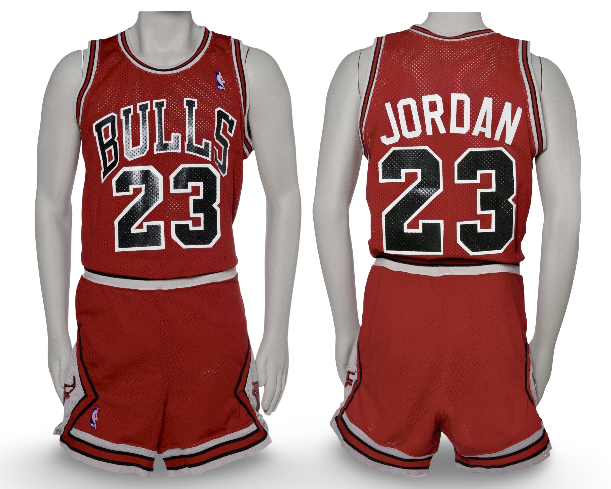

1986–87
Population Summary
| Style | Confirmed | Public | Status |
|---|---|---|---|
| Home | 1 | 1 | √ |
| Away | 1 | 1 | √ |
The Michael Jordan Archive population study is an ongoing research initiative. Population conclusions reflect best-available documentation and comparative review.

HOME
Publicly documented example.
Public Sale
Research & Provenance
Prior documentation reflected 15 identified photo matches. Independent archival research conducted by The Michael Jordan Archive expanded confirmed matches to 41 games through additional primary-source image analysis and comparative review.
Documentation
Photo Match Details
- Photo-Matched: Yes
- Games Photo-Matched: 41
- Photo-Matched By: MeiGray, SIA, MJA
- Authentication / LOA: Yes
Documented Games
- October 24, 1986 / April 28, 1987 — A complete season of conclusive wear has been determied

AWAY

Publicly documented example.
Public Sale
Research & Provenance
Prior documentation mislabled this uniform as a 1987-88 season, this uniforn is infact from the 1986-87 season and has been fully documented and verified within our archive.
Documentation
Photo Match Details
Documented Games